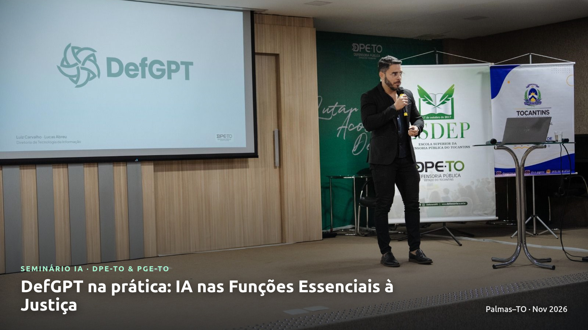
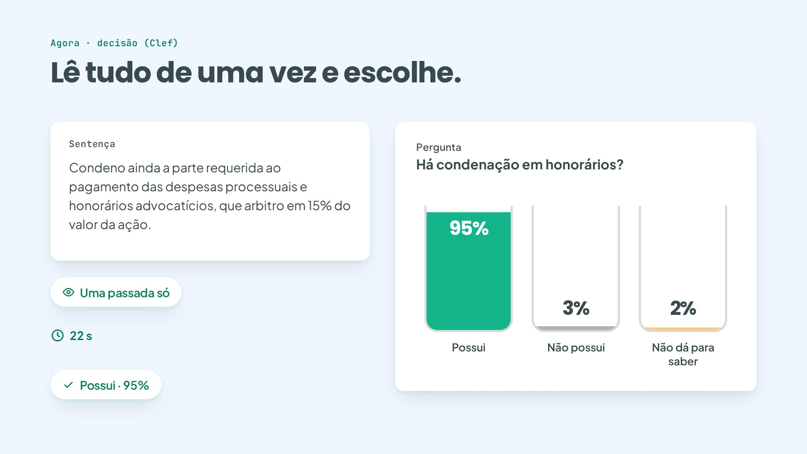
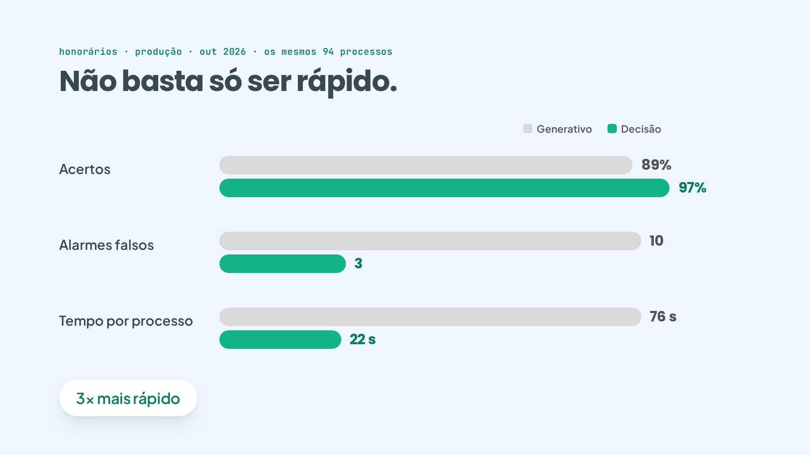

O que foi apresentado sobre o DefGPT no seminário da DPE-TO e PGE-TO?
O Seminário Inteligência Artificial e Transformação Digital nas Funções Essenciais à Justiça acontece em Palmas, no Tocantins. A programação ocorre nos dias 26 e 27 de novembro de 2026. O evento é promovido pela Defensoria Pública do Estado do Tocantins (DPE-TO), via Esdep, em parceria com a Procuradoria-Geral do Estado (PGE-TO). Na tarde de quinta-feira, 26 de novembro, eu e Lucas Magno Oliveira Abreu apresentamos o DefGPT e o sistema Solar. Mostramos como a IA evoluiu na Defensoria desde 2017 até rodar em servidor comum sem GPU, com custo adicional zero. Além disso, detalhamos o salto dos modelos de decisão com o Clef-Flash. Nos mesmos 94 processos em produção, os acertos subiram de 89% para 97%. Também caíram os alarmes falsos, de 10 para 3, e o tempo por processo caiu de 76 para 22 segundos. Por fim, o seminário debate segurança de dados, normatização e letramento tecnológico no serviço público.
Falar de Inteligência Artificial no serviço público é fácil quando o tema fica no discurso. No entanto, colocar uma plataforma em produção exige responder duas perguntas antes de qualquer código: segurança dos dados e orçamento.

E se a IA morasse aqui dentro?
Em abril de 2024, o ponto de partida foi direto. Dado de assistido não pode sair da Defensoria, e não havia orçamento para licenças milionárias. Por isso, a arquitetura nasceu dentro de casa.
O DefGPT entrou em operação em um servidor comum que já existia na instituição: sem GPU, com 32 GB de memória e 128 núcleos. Ele usa modelos abertos e equipe interna, com custo adicional de R$ 0,00. Além disso, o projeto se apoia em uma caminhada iniciada em 2017. Ela começou com Susie Bot e Luna Chatbot, passou pelo Hermes (2020) e pelo Apollo (2021).
Hoje, o DefGPT conversa com vários sistemas da casa, como Solar, Luna, DOL, SAJ, SIGAD e ProcAPI. O projeto já soma mais de mil alterações no repositório. Ele venceu o 1º lugar no CNTI.Def (Foz do Iguaçu, jun 2025) e o Prêmio J.Ex 2025 (Brasília, nov 2025).
Os dois casos que tiraram a IA do papel
Primeiro, em maio de 2024, entrou no ar o ChatSummarizator. Ele recebe conversas de WhatsApp cheias de áudios, fotos e mensagens soltas e gera anotações estruturadas com etiquetas direto no Solar. O ganho no atendimento chegou a 5× em eficiência.
Em seguida, atacamos o maior gargalo: a fila de análise de honorários no Solar. Ela cresceu de 59.908 processos em julho de 2024 para 69.110 em novembro de 2024 e 94.717 em julho de 2025. Um analista consegue 55 processos por dia. Ou seja, a fila enchia mais rápido do que saía.
- Busca no ProcAPI: o número do processo volta com a lista de eventos.
- Filtro por regra: confere sentença, trânsito em julgado, ausência de recurso e prazo de 5 anos. Dos ~64 mil processados, a maioria se resolve aqui.
- Leitura pela IA: o modelo analisa apenas o trecho final da sentença dos ~22 mil processos restantes.
- Retorno ao sistema: o resultado volta gravado direto no ProcAPI.
Com isso, saltamos de 55 para 3.000 processos por dia (54× mais rápido). Analisar 22 mil processos caiu de 1,5 ano à mão para 14 dias com o DefGPT, um ganho de 97,33%. O retorno estimado é de ~R$ 1,5 milhão nos 22 mil processos e ~R$ 7 milhões na fila inteira.
O próximo salto: modelos de decisão (Clef-Flash)
O bloco final da palestra mostrou uma mudança técnica que já estamos rodando em produção. Nem todo problema jurídico pede uma IA generativa escrevendo uma redação palavra por palavra. Quando a tarefa é de múltipla escolha, um modelo de decisão funciona muito melhor.

Adotamos o Clef-Flash 9B (família System One, aberto pela Cloudflare em outubro de 2026). Em vez de gerar texto longo, ele lê a sentença inteira de uma vez e devolve probabilidades: possui, não possui ou não dá para saber. Quando o grau de certeza é baixo, como 52%, o processo vai para uma pessoa revisar.

Melhor "não sei" do que errar com convicção
Portanto, o ganho não é só velocidade. Nos mesmos 94 processos em produção, os acertos subiram de 89% para 97%. Também caíram os alarmes falsos (10 para 3) e o tempo (76 s para 22 s). A capacidade saltou para mais de 10 mil processos por dia, derrubando os 22 mil processos de 14 dias para 2,2 dias.
Também testamos essa abordagem de forma experimental no Odin, para leitura de portarias do SEI. Nos testes com o modelo carregado, o tempo caiu da mediana de 100 segundos em produção para cerca de 3 segundos.
Governança, segurança e o papel humano
O seminário reuniu DPE-TO e PGE-TO justamente para equilibrar entrega técnica, segurança de dados e normatização. Na abertura, o defensor público-geral Pedro Alexandre Conceição Aires Gonçalves lembrou que, quanto mais robôs são usados, mais evidente fica a necessidade de acolhimento humano.
Da mesma forma, o procurador-geral do Estado, Jax James Garcia Pontes, reforçou o papel humano. A IA auxilia no trabalho, mas a decisão jurídica segue sob responsabilidade humana. Já o diretor-geral da Esdep, Murilo da Costa Machado, lembrou que não basta entregar tecnologia: é preciso preparar as pessoas.
A cobertura completa do primeiro dia está na matéria oficial da DPE-TO. O evento segue nesta sexta-feira, 27 de novembro, com debates sobre aquisição e desenvolvimento de IA, gestão no serviço público e letramento tecnológico.
Esse princípio guia tanto o trabalho que lidero em desenvolvimento de soluções de IA quanto os meus treinamentos práticos de IA. A ferramenta acelera o operacional, mas quem assina e responde pelo resultado continua sendo gente.
Perguntas que sempre chegam
- Qual infraestrutura o DefGPT usa na Defensoria Pública do Tocantins?
- O DefGPT nasceu rodando em um servidor comum que já existia na DPE-TO, sem GPU, com 32 GB de memória e 128 núcleos. Ele usa modelos abertos e equipe interna, com custo adicional de R$ 0,00. Além disso, nenhum dado de assistido sai da instituição.
- Qual a diferença entre modelo generativo e modelo de decisão no DefGPT?
- O modelo generativo lê e escreve palavra por palavra, como uma redação, levando 76 segundos por processo. Já o modelo de decisão Clef-Flash lê tudo de uma vez e escolhe com probabilidades, como múltipla escolha. Com isso, o tempo caiu para 22 segundos e os acertos subiram de 89% para 97%.
- A inteligência artificial substitui a decisão humana na Defensoria?
- Não. A IA acelera análises repetitivas e o trabalho pesado de triagem e leitura. Quando o modelo de decisão não tem certeza, o caso vai para revisão humana. Além disso, a responsabilidade pela decisão jurídica e o acolhimento ao cidadão permanecem inteiramente humanos.
- Onde conhecer mais sobre o DefGPT?
- A apresentação oficial do projeto está disponível em defgpt.defensoria.to.def.br/about. O DefGPT conquistou o 1º lugar no CNTI.Def 2025 e o Prêmio J.Ex 2025, e já soma mais de mil alterações no repositório.